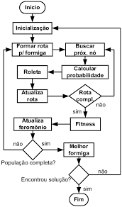
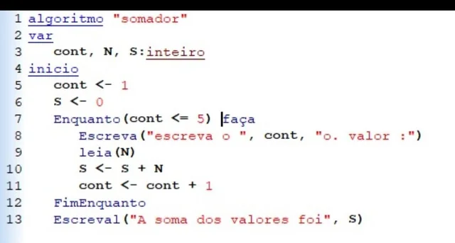
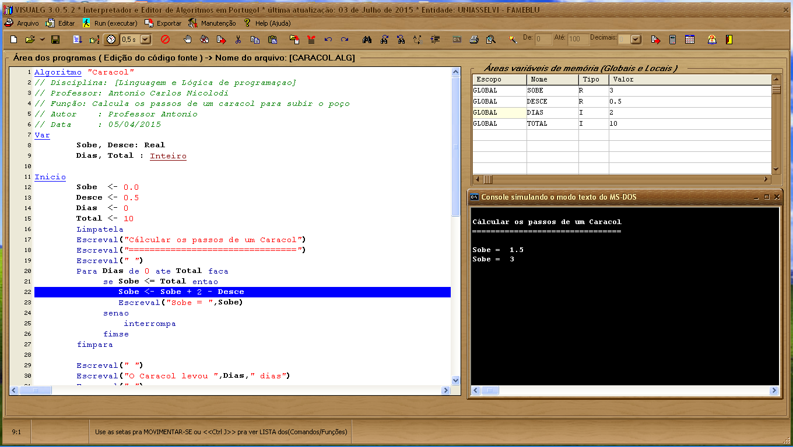
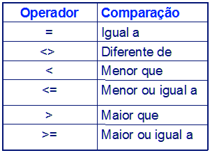
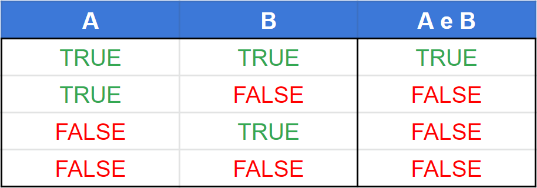
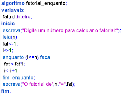
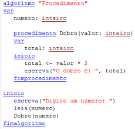
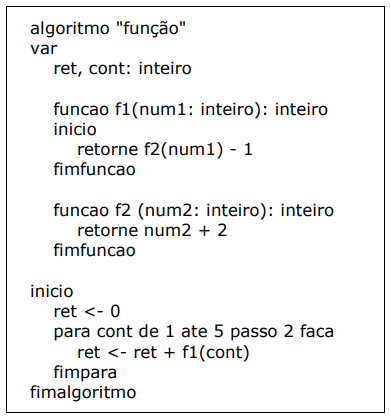

São conjuntos de passos finitos e organizados que , quando executados , um determinado problema é resolvido
Rotina -> O conceito de ROTINA é referênte a tudo aquilo que vem a se reproduzir com um padrão
Ex :
olhar para a direita
olhar para a esquerda
se estiver passando carro
não atravessar
senão
atravessar
fim-se
fim do algoritmo
São passos a serem dados/seguidos por um módulo processador e seus respectivos usuários que , quando executados na ordem correta , conseguem realizar determinada tarefa. São rotinas executadas por algum processador
Módulo Processador -> Tudo aquilo que pode efetuar um processamento/ tudo que pode ser programável
Estes são os passos para se criar um Algoritmo computacional
Lógica Computacional -> É o que está na sua cabeça , é a arquitetura que você vai fazer se baseando em raciocínio lógico.
Para representar a lógica de programação , existe algumas ferramentas e as mais comuns são :
Fluxograma -> Representa a lógica através de um fluxo de informações de um ponto a outro

NASSI SHNEIDERMAN(Diagrama de Chapin) -> Onde você representar a lógica do programa através de blocos.

Portugol -> É um pseudocódigo que se é utilizado nos dias de hoje. Pseudocódigo é a lógica do seu programa escrita na linguagem nativa que , na nosso caso , ficou batizado como PORTUGOL.

Visualg -> É a junção de dois termos : visual e algoritmo. O visualg é uma ferramenta de grande ajuda e sua criação tem o intuito de auxiliar alunos para aprender " na prática" algoritmo
Quando se abre o aplicativo , pode aparecer a estrutura básica mas caso não apareça, aperte CTRL + espaço que vai aparecer a "formula"

Na parte superior direta fica o ESCOPO, tela onde representa a memória do computador . Sua localização pode mudar mas sempre está presente
Os comando de saida do VisuAlg,são usados para exibir informações na tela. Eles permitem exibir textos entre aspas,valores de variáveis ou a combinação de ambos (concatenação) separados por vírgula
Comandos de entrada é a interação do usuário com o computador , uma forma de entrar com dados no computador , vai solicitar algumas coisas ao usuário que está utilizando o sistema.Este comando armazena os valores em variáveis pré-declarados , permitindo a interação
Leia() -> O principal comando de entrada do VisuAlg é o leia , utilizado para receber dados digitados pelo utilizador durante a execução
Var -> Vem da palavra variável . Variáveis são espaços vazios da memória do computador que são preenchidos por valores
As variáveis podem ser simples ou compostas(vetores e matrizes). Nas simples é permitido apenas armazenar um valor.
Para se nomear uma variável , se usa a estrutura do identificador e o tipo(identificador:tipo)
Identificador -> identificam determinadas variáveis. Para se nomear uma variável se deve respeitar as 6 regras para batizar o identificador
Tipos Primitivos -> São as categorias básicas para definir o que uma variável pode armazenar . São eles que determinam como o computador interpreta e manipula as informações
o nome Atribuição é dado a ação de atribuirmos um valor na variável
Para a sua construção , existe algumas regras e elas são
Para fazermos a atribuição utilizamos o sial de menor quê (<) juntamente com i sinal de subtração (-) fazendo uma espécie de "seta" para a esquerda ( <- ).
A matemática está presente nas nossas vidas e nas linguagens de programação também.Em um doos exercícios da aula se foi utilizado o mais simples dos operadores mas existem outros .
Ordem de precedência -> Diz respeito ao grau da importância de uma expressão , quem será resolvido primeiro
OBS: Quando se usa o operador de divisão , automaticamente ele não vai com números inteiros e sim com números reais
Funções aritméticas -> O VisuAlg utiliza operaderadores aritméticos para cálculos , operadores especias e tambem inclui funções pré-definidas .
OBS: -> é possível utilizá-las juntas
Operadores relacionais -> Vão criar a relação entre variáveis e expressões , você vai poder comparar variáveis e expressões e gerar resultados lógicos (verdadeiro ou falso)
OBS:Operadores relacionais sempre vão resultar em valores lógicos

Operadores lógicos -> Assim como os operadores relacionais , os operadores lógicos também retornam um valor lógico , mas eles não servem para comparar resultados de expressões ou números , mas sim parar outros resultados lógicos . Existem 3 tipos de operadores lógicos :

Utilizando o operador E nós vamos ter o resultado verdadeiro apenas nos casos em que as premissas forem verdadeiras.

No caso do operador OU só vai acontecer de retornar falso nos casos em que as duas premissas forem falsas . Em todos os outros casos , os operadores lógicos serão verdadeiros.

Sempre irá acontecer uma inversão do valor lógico
Na comparação , a referência sempre vai ser a verdadeira , ele sempre vai querer a verdadeira , ele quer os dois verdadeiros nos operadores E e OU.
A precedência dos operadores em algoritmos define a ordem de avaliação das expressões, crucial para resultados corretos. A ordem geral é:
Estrutura Condicional -> É o jeito em que o algoritmo usa para tomar decisões. É como dizer : "Se isso acontecer , faça tal coisa. Senão , faça outra ."
"Se eu tiver dinheiro, então vou a Disney
Senão , eu não faço a viagem."
Estruturas Condicionais permitem que o algoritmo pense,compare e reaja a situações diferentes , tornando o programa mais inteligênte e flexível

SE -> Se a condição for verdadeira , executa determinado bloco de ação
SeNão -> executa outro bloco (opcional)
OBS: Se você usar vários SE separados , cada um vai ter a necessidade de um FimSE
OBS: -> Se tiver dois termos ou para serem analisados nas condições , basta utilizar o parênteses nos termos e , entre eles , utilizar "e".
Condições Aninhadas -> Nada mais são que condições dentro de condições . É como colocar um Se dentro de outro SE , onde o segundo será ativado somente se o primeiro for verdadeiro


Estrutura condicional (Escolha Caso) -> É usada para selecionar um bloco de código dentre várias opções . Baseando-se no valor de uma variável , um determinado código será executado
OBS:É a melhor escolha para fazer testes com númerações simples pois está estrutura condicional só funciona com valores inteiros.
E também você pode colocar mais de um valor nos casos, basta separá-los com vírgula.
Estrutura de Repetição -> São um conjunto de comandos que fazem determinados programas se repetirem automaticamente sem que você precise escrever tudo novamente.Elas serem para automatizar tarefas repititivas,economizar códigos e assim evitam alguns erros. Existem 3 tipos de esttrutura de repetição:

fimenquantoRepete enquanto a condição for verdadeira,é como dizer:
"Continue fazendo isso enquanto isso não mudar"
Como , por exemplo , falar para beber água enquanto tiver água no copo
Muito útil quando não sabemos quantas repetições serão necessárias para executar determinada tarefa do nocsso código

Estrutura de Repetição Repita -> Repete até que a condição seja verdadeira.É o inverso do enquanto . Como por exemplo :
"Estude até que se entenda a matéria"
Então aqui diz que eu não vou parar de estudar até entender a matéria . Então , a estrutura de repetição repita , vai repetir até que a condição venha a se tornar verdadeira.
 *fimpara
*fimpara
Estrutura de Repetição Para -> Ela repete o número conhecido por vezes . Sua indicação é para que se a utilize quando sabemos até quando o laço irá acontecer
Ela é uma estrutura de repetição mais completa do que a anteriores , pois ela incorpora a inicialização , incremento e teste de valor final da variável de controle.
Escopo -> É o " território " onde uma variável existe dentro da memória do computador
Quandomse cria uma variável , o computador reserva um espaço na memória para guardaraquele valor . O escopo define onde esse espaço pode ser acessado dentro do algoritmo.
Memória -> A memória é como um grande cojunto de gavetas numeradas onde o coputador guarda informações temporárias enquanto o programa está rodando
Procedimentos , em algoritmo, São como pequenas "funções" que você cria para organizar melhor o seu código. Pense neles como blocos de instruções que realizam uma tarefa específica e podem ser reutilizadas sempre que necessário.

Em algoritmo , usamos procedimentos e funções para modularizar o código , em python , usamos a função para cumprir ambos os papéis
Quando se tem alguns algoritmos que se repetem ao decorrer do programa , dizemos que caiu na rotina
Um procedimento é um trecho onde resolve essas rotinas com um algoritmo separado, criado para executar uma ação específica, sem precisar repetir o mesmo código várias vezes
Quando quero que algum procedimento seja executado , devo utilizar os parâmetros para inicar . Os parâmetros nada mais são que informações que passamos para o procedimento com o fim de o por para funcionar pois sem eles não seria possível e existem 2 maneiras para isso:
Passagem de parâmetro por valor -> Cria uma cópia do valor original que vai ser utilizada e trabalhada dentro do procedimento , podendo assim alterar conforme for necessário sem submeter o original a alterações e etc
Passagem de parâmetro por referência -> Esta já permite que o valor original venha a se submeter as alterações feitas dentro do procedimento ao contrário da passagem de parâmetro por valor
OBS:Como se é possivel ver na imagem que ilustra esse subtema , a necessidade de um segundo VAR e INÍCIO no código é algo que é normal pois para se fazer um procedimento e função se é necessário e é aqui que se vê o conceito de LOCAL e GLOBAL do escolo referênte a onde determinado valor da variável irá estar no momento.
Uma Função é um bloco de código criado para realizar uma tarefa es+ecífica e devolver um resultado , seja ele matemático . lógico , textual , estrutural ou qualquer outro tipo de informação útil para o algoritmo

OBS: O segundo "inteiro" na linha onde a função está sendo escrita , é referênte ao valor que irá retornar
Dentro do visualg existem algumas funções prontas como por exemplo :